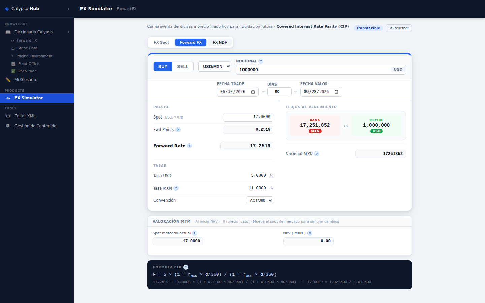
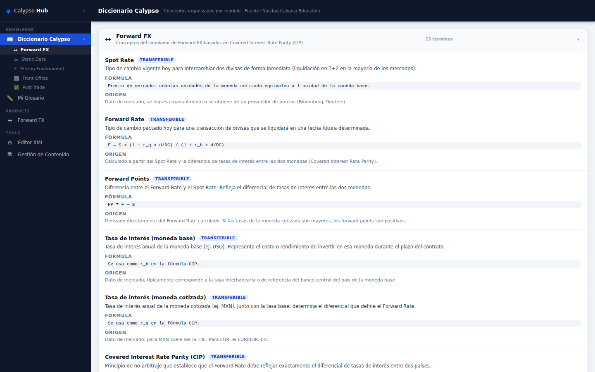
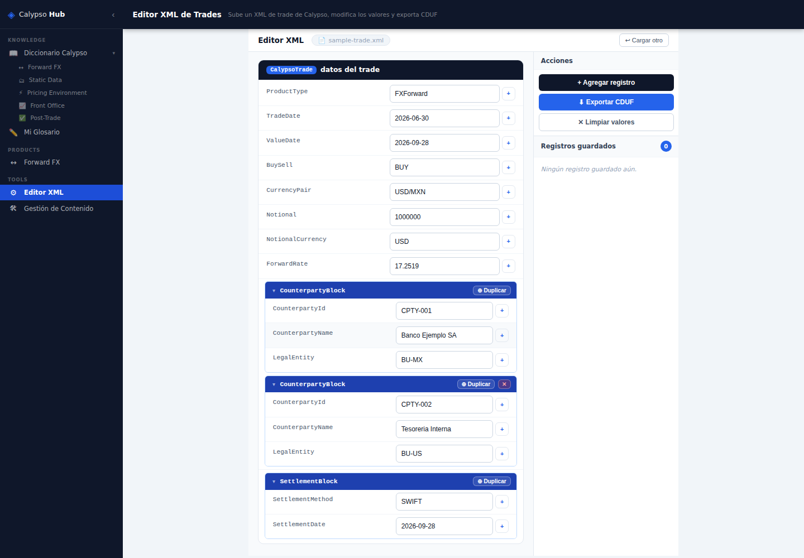
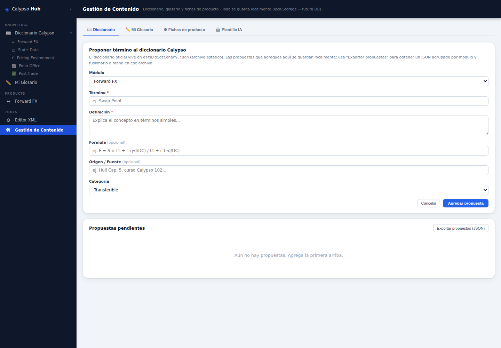

IA agéntica aplicada a capacitación financiera interna
Calypso es una plataforma compleja para nuevos analistas y consultores.
Forward FX, NDF, tasas y pricing no son fáciles de entender sin formación financiera previa.
El conocimiento vive disperso en documentos y personas, no en una herramienta interactiva.
Plataforma de capacitación interactiva construida con IA agéntica (Claude Code). Esta demo de hackatón corre 100% local, sin backend ni costos de infraestructura — pensada para uso interno de la empresa.
La arquitectura ya está preparada para evolucionar hacia un back office real (usuarios, persistencia, versionado de contenido) cuando se quiera llevar a producción.
FX Spot, Forward FX y FX NDF, con cálculo de cashflows en tiempo real.
Hover sobre cualquier valor calculado: definición, fórmula y origen del dato.
Carga, edita y exporta trades de Calypso en formato CDUF.
Página centralizada para proponer nuevos términos del diccionario.
Cálculo de Forward Rate con la fórmula de Covered Interest Rate Parity (CIP), mostrando paso a paso cómo se llega al resultado con los valores reales ingresados.
Soporta FX Spot, Forward FX y FX NDF desde el mismo motor, configurado por archivos JSON por producto.

Cada término del simulador tiene su definición, fórmula y origen del dato, organizados por módulo.
TRANSFERIBLE para conceptos aplicables a otras plataformas, vs. específico de Calypso.

Carga un XML de trade de Calypso y lo convierte en un formulario editable, con jerarquía visual de 3 niveles.
Campos y bloques repetibles (duplicar contrapartes, agregar valores), y exportación de vuelta a formato CDUF.

Formulario para proponer nuevos términos al diccionario sin tocar código.
Pensado para recibir entradas generadas externamente con IA, manteniendo el control de calidad humano.

Ningún cambio se implementó sin presentar el plan y obtener confirmación explícita.
Cada fórmula se explicó en términos simples y se confirmó su fuente antes de implementarla — ninguna se inventó.
14 Pull Requests en el historial, cambios pequeños y revisables.
Agregar un producto financiero nuevo no requiere tocar el motor de cálculo.
Commits en español, ramas descriptivas, hooks de verificación antes de cada push.
Reduce la curva de aprendizaje de nuevos analistas y consultores Calypso.
Sin licencias, sin backend pagado en esta etapa de demo.
Arquitectura preparada para un back office real, sin reescribir motor ni interfaz.
El mismo enfoque de IA agéntica aplica a otras herramientas internas de la empresa.
Gestión de usuarios, persistencia real y versionado de contenido.
Generación asistida de la ficha de configuración del producto simulado.
Ampliar el simulador a nuevos instrumentos.
Crecer el diccionario con aportes del equipo.